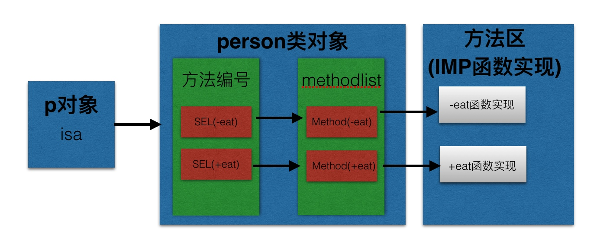
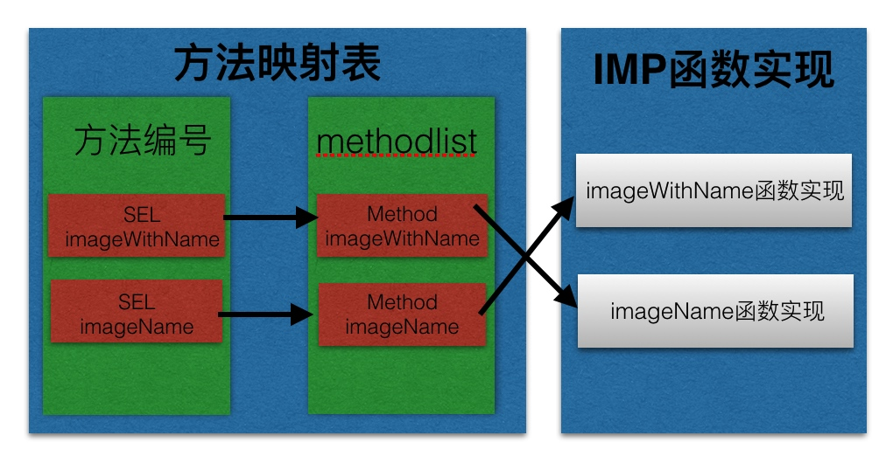

一、runtime简介
- runTime简称运行时。OC就是
运行时机制，也就是在运行时候的一些机制，其中最主要的是消息机制。
- 对于C语言，
函数的调用在编译的时候会决定调用哪个函数。
- 对于OC的函数，属于
动态调用过程，在编译的时候并不能决定真正调用哪个函数，只有在真正运行的时候才会根据函数的名称找到对应的函数来调用。
- 事实证明：
- 在编译阶段，OC可以
调用任何函数，即使这个函数并未实现，只要声明过就不会报错。
- 在编译阶段，C语言调用
未实现的函数就会报错。
二、runtime作用
1.发送消息
- 方法调用的本质，就是让对象发送消息。
- objc_msgSend,只有对象才能发送消息，因此以objc开头.
- 使用
消息机制前提，必须导入#import
- 消息机制简单使用
- clang -rewrite-objc main.m 查看最终生成代码
// 创建person对象
Person *p = [[Person alloc] init];
// 调用对象方法
[p eat];
// 本质：让对象发送消息
objc_msgSend(p, @selector(eat));
// 调用类方法的方式：两种
// 第一种通过类名调用
[Person eat];
// 第二种通过类对象调用
[[Person class] eat];
// 用类名调用类方法，底层会自动把类名转换成类对象调用
// 本质：让类对象发送消息
objc_msgSend([Person class], @selector(eat));
- 消息机制原理:对象根据方法编号SEL去映射表查找对应的方法实现

2.交换方法
- 开发使用场景:系统自带的方法功能不够，给系统自带的方法扩展一些功能，并且保持原有的功能。
- 方式一:继承系统的类，重写方法.
- 方式二:使用runtime,交换方法.
@implementation ViewController
- (void)viewDidLoad {
[super viewDidLoad];
// Do any additional setup after loading the view, typically from a nib.
// 需求：给imageNamed方法提供功能，每次加载图片就判断下图片是否加载成功。
// 步骤一：先搞个分类，定义一个能加载图片并且能打印的方法+ (instancetype)imageWithName:(NSString *)name;
// 步骤二：交换imageNamed和imageWithName的实现，就能调用imageWithName，间接调用imageWithName的实现。
UIImage *image = [UIImage imageNamed:@"123"];
}
@end
@implementation UIImage (Image)
// 加载分类到内存的时候调用
+ (void)load
{
// 交换方法
// 获取imageWithName方法地址
Method imageWithName = class_getClassMethod(self, @selector(imageWithName:));
// 获取imageWithName方法地址
Method imageName = class_getClassMethod(self, @selector(imageNamed:));
// 交换方法地址，相当于交换实现方式
method_exchangeImplementations(imageWithName, imageName);
}
// 不能在分类中重写系统方法imageNamed，因为会把系统的功能给覆盖掉，而且分类中不能调用super.
// 既能加载图片又能打印
+ (instancetype)imageWithName:(NSString *)name
{
// 这里调用imageWithName，相当于调用imageName
UIImage *image = [self imageWithName:name];
if (image == nil) {
NSLog(@"加载空的图片");
}
return image;
}
@end
交换原理：
交换之前：

交换之后：

3.动态添加方法
- 开发使用场景：如果一个类方法非常多，加载类到内存的时候也比较耗费资源，需要给每个方法生成映射表，可以使用动态给某个类，添加方法解决。
- 经典面试题：有没有使用performSelector，其实主要想问你有没有动态添加过方法。
- 简单使用
@implementation ViewController
- (void)viewDidLoad {
[super viewDidLoad];
// Do any additional setup after loading the view, typically from a nib.
Person *p = [[Person alloc] init];
// 默认person，没有实现eat方法，可以通过performSelector调用，但是会报错。
// 动态添加方法就不会报错
[p performSelector:@selector(eat)];
}
@end
@implementation Person
// void(*)()
// 默认方法都有两个隐式参数，
void eat(id self,SEL sel)
{
NSLog(@"%@ %@",self,NSStringFromSelector(sel));
}
// 当一个对象调用未实现的方法，会调用这个方法处理,并且会把对应的方法列表传过来.
// 刚好可以用来判断，未实现的方法是不是我们想要动态添加的方法
+ (BOOL)resolveInstanceMethod:(SEL)sel
{
if (sel == @selector(eat)) {
// 动态添加eat方法
// 第一个参数：给哪个类添加方法
// 第二个参数：添加方法的方法编号
// 第三个参数：添加方法的函数实现（函数地址）
// 第四个参数：函数的类型，(返回值+参数类型) v:void @:对象->self :表示SEL->_cmd
class_addMethod(self, @selector(eat), eat, "v@:");
}
return [super resolveInstanceMethod:sel];
}
@end
4.给分类添加属性
- 原理：给一个类声明属性，其实本质就是给这个类添加关联，并不是直接把这个值的内存空间添加到类存空间。
@implementation ViewController
- (void)viewDidLoad {
[super viewDidLoad];
// Do any additional setup after loading the view, typically from a nib.
// 给系统NSObject类动态添加属性name
NSObject *objc = [[NSObject alloc] init];
objc.name = @"微指";
NSLog(@"%@",objc.name);
}
@end
// 定义关联的key
static const char *key = "name";
@implementation NSObject (Property)
- (NSString *)name
{
// 根据关联的key，获取关联的值。
return objc_getAssociatedObject(self, key);
}
- (void)setName:(NSString *)name
{
// 第一个参数：给哪个对象添加关联
// 第二个参数：关联的key，通过这个key获取
// 第三个参数：关联的value
// 第四个参数:关联的策略
objc_setAssociatedObject(self, key, name, OBJC_ASSOCIATION_RETAIN_NONATOMIC);
}
@end
5.字典转模型
- 设计模型：字典转模型的第一步
- 模型属性，通常需要跟字典中的key一一对应
- 问题：一个一个的生成模型属性，很慢？
- 需求：能不能自动根据一个字典，生成对应的属性。
- 解决：提供一个分类，专门根据字典生成对应的属性字符串。
@implementation NSObject (Log)
// 自动打印属性字符串
+ (void)resolveDict:(NSDictionary *)dict{
// 拼接属性字符串代码
NSMutableString *strM = [NSMutableString string];
// 1.遍历字典，把字典中的所有key取出来，生成对应的属性代码
[dict enumerateKeysAndObjectsUsingBlock:^(id _Nonnull key, id _Nonnull obj, BOOL * _Nonnull stop) {
// 类型经常变，抽出来
NSString *type;
if ([obj isKindOfClass:NSClassFromString(@"__NSCFString")]) {
type = @"NSString";
}else if ([obj isKindOfClass:NSClassFromString(@"__NSCFArray")]){
type = @"NSArray";
}else if ([obj isKindOfClass:NSClassFromString(@"__NSCFNumber")]){
type = @"int";
}else if ([obj isKindOfClass:NSClassFromString(@"__NSCFDictionary")]){
type = @"NSDictionary";
}
// 属性字符串
NSString *str;
if ([type containsString:@"NS"]) {
str = [NSString stringWithFormat:@"@property (nonatomic, strong) %@ *%@;",type,key];
}else{
str = [NSString stringWithFormat:@"@property (nonatomic, assign) %@ %@;",type,key];
}
// 每生成属性字符串，就自动换行。
[strM appendFormat:@"\n%@\n",str];
}];
// 把拼接好的字符串打印出来，就好了。
NSLog(@"%@",strM);
}
@end
@implementation Status
+ (instancetype)statusWithDict:(NSDictionary *)dict
{
Status *status = [[self alloc] init];
[status setValuesForKeysWithDictionary:dict];
return status;
}
@end
- KVC字典转模型弊端：必须保证，模型中的属性和字典中的key一一对应。
- 如果不一致，就会调用
[ setValue:forUndefinedKey:] 报key找不到的错。
- 分析:模型中的属性和字典的key不一一对应，系统就会调用
setValue:forUndefinedKey:报错。
- 解决:重写对象的
setValue:forUndefinedKey:,把系统的方法覆盖， 就能继续使用KVC，字典转模型了。
- (void)setValue:(id)value forUndefinedKey:(NSString *)key
{
}
- 字典转模型的方式二：Runtime
- 思路：利用运行时，遍历模型中所有属性，根据模型的属性名，去字典中查找key，取出对应的值，给模型的属性赋值。
- 步骤：提供一个NSObject分类，专门字典转模型，以后所有模型都可以通过这个分类转。
@implementation ViewController
- (void)viewDidLoad {
[super viewDidLoad];
// Do any additional setup after loading the view, typically from a nib.
// 解析Plist文件
NSString *filePath = [[NSBundle mainBundle] pathForResource:@"status.plist" ofType:nil];
NSDictionary *statusDict = [NSDictionary dictionaryWithContentsOfFile:filePath];
// 获取字典数组
NSArray *dictArr = statusDict[@"statuses"];
// 自动生成模型的属性字符串
// [NSObject resolveDict:dictArr[0][@"user"]];
_statuses = [NSMutableArray array];
// 遍历字典数组
for (NSDictionary *dict in dictArr) {
Status *status = [Status modelWithDict:dict];
[_statuses addObject:status];
}
// 测试数据
NSLog(@"%@ %@",_statuses,[_statuses[0] user]);
}
@end
@implementation NSObject (Model)
+ (instancetype)modelWithDict:(NSDictionary *)dict
{
// 思路：遍历模型中所有属性-》使用运行时
// 0.创建对应的对象
id objc = [[self alloc] init];
// 1.利用runtime给对象中的成员属性赋值
// class_copyIvarList:获取类中的所有成员属性
// Ivar：成员属性的意思
// 第一个参数：表示获取哪个类中的成员属性
// 第二个参数：表示这个类有多少成员属性，传入一个Int变量地址，会自动给这个变量赋值
// 返回值Ivar *：指的是一个ivar数组，会把所有成员属性放在一个数组中，通过返回的数组就能全部获取到。
/* 类似下面这种写法
Ivar ivar;
Ivar ivar1;
Ivar ivar2;
// 定义一个ivar的数组a
Ivar a[] = {ivar,ivar1,ivar2};
// 用一个Ivar *指针指向数组第一个元素
Ivar *ivarList = a;
// 根据指针访问数组第一个元素
ivarList[0];
*/
unsigned int count;
// 获取类中的所有成员属性
Ivar *ivarList = class_copyIvarList(self, &count);
for (int i = 0; i 字典中的key
// 从第一个角标开始截取
NSString *key = [name substringFromIndex:1];
// 根据成员属性名去字典中查找对应的value
id value = dict[key];
// 二级转换:如果字典中还有字典，也需要把对应的字典转换成模型
// 判断下value是否是字典
if ([value isKindOfClass:[NSDictionary class]]) {
// 字典转模型
// 获取模型的类对象，调用modelWithDict
// 模型的类名已知，就是成员属性的类型
// 获取成员属性类型
NSString *type = [NSString stringWithUTF8String:ivar_getTypeEncoding(ivar)];
// 生成的是这种@"@\"User\"" 类型 -》 @"User" 在OC字符串中 \" -> "，\是转义的意思，不占用字符
// 裁剪类型字符串
NSRange range = [type rangeOfString:@"\""];
type = [type substringFromIndex:range.location + range.length];
range = [type rangeOfString:@"\""];
// 裁剪到哪个角标，不包括当前角标
type = [type substringToIndex:range.location];
// 根据字符串类名生成类对象
Class modelClass = NSClassFromString(type);
if (modelClass) { // 有对应的模型才需要转
// 把字典转模型
value = [modelClass modelWithDict:value];
}
}
// 三级转换：NSArray中也是字典，把数组中的字典转换成模型.
// 判断值是否是数组
if ([value isKindOfClass:[NSArray class]]) {
// 判断对应类有没有实现字典数组转模型数组的协议
if ([self respondsToSelector:@selector(arrayContainModelClass)]) {
// 转换成id类型，就能调用任何对象的方法
id idSelf = self;
// 获取数组中字典对应的模型
NSString *type = [idSelf arrayContainModelClass][key];
// 生成模型
Class classModel = NSClassFromString(type);
NSMutableArray *arrM = [NSMutableArray array];
// 遍历字典数组，生成模型数组
for (NSDictionary *dict in value) {
// 字典转模型
id model = [classModel modelWithDict:dict];
[arrM addObject:model];
}
// 把模型数组赋值给value
value = arrM;
}
}
if (value) { // 有值，才需要给模型的属性赋值
// 利用KVC给模型中的属性赋值
[objc setValue:value forKey:key];
}
}
free(ivarList);
return objc;
}
@end